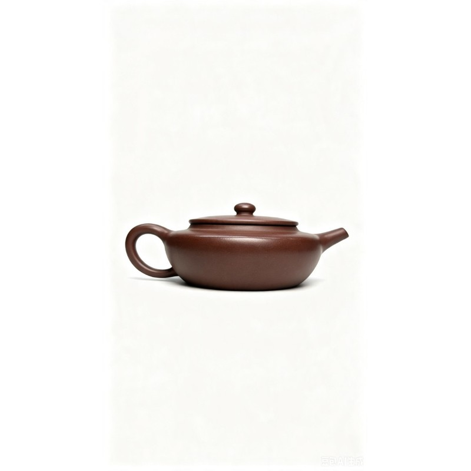
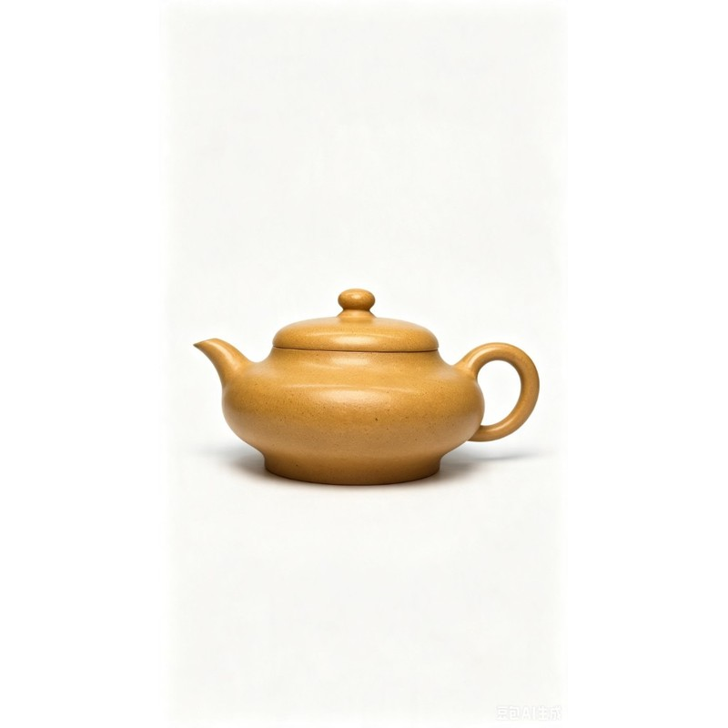
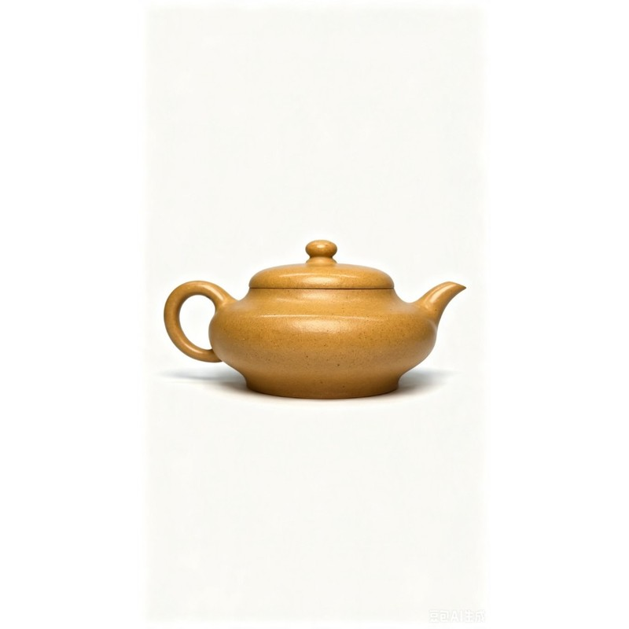
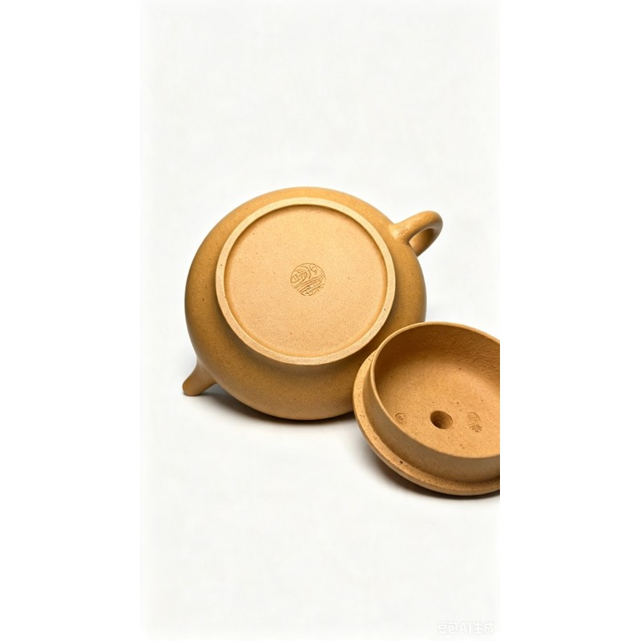

宽扁素壶 · 青灰段泥
Flat Teapot · Qinghui Duanni
¥980



扁圆器型，本山段泥，色泽温润金黄，素器清雅，适合日常泡茶赏玩。
日常系列 · 全球发货。
此为扁圆器型，选取本山段泥制成，色泽温润金黄，砂质颗粒清晰可见。壶身扁而不塌，腹线舒展柔和，圆珠钮精巧圆润，一捺底稳重大方。流把对称协调，线条简约内敛，无额外刻绘，以素器见长，清雅素净，十分适合日常泡茶赏玩。
本店茶壶均采用江苏宜兴黄龙山原矿紫砂，经粉碎、筛分与自然陈腐至少一年后手工制作，为世间唯一正宗紫砂矿源。
不添加化工色料与外来泥料，所见即为原矿紫砂。
悉心养护的紫砂壶会随使用日益温润，形成「包浆」，使茶汤更醇、泥色更亮。